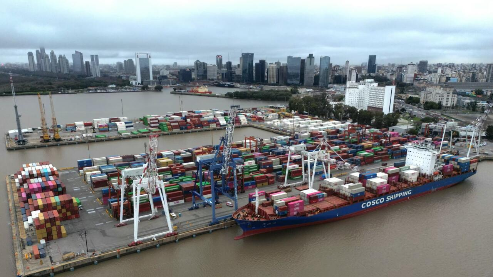

Por qué la Argentina necesita pensar sus puertos
La Argentina necesita volver a pensar sus puertos como política de Estado y como proyecto nacional de largo plazo. No como una agenda sectorial limitada a especialistas, sino como una decisión estratégica que impacta en el empleo, la producción, las exportaciones, la integración territorial y la soberanía económica.
Cuando un país no ordena su sistema portuario, no sólo encarece su logística: también pierde oportunidades de desarrollo, de inversión y de inserción inteligente en el comercio internacional.
Nuestros puertos son la puerta de salida de buena parte de lo que producimos y la puerta de entrada de insumos esenciales para la industria. Son nodos críticos de una red que conecta economías regionales con mercados globales. Por eso, la discusión portuaria no puede reducirse a infraestructura aislada ni a respuestas coyunturales. Requiere una visión integral: cómo se articulan los puertos entre sí, cómo se conectan con rutas, ferrocarriles y vías navegables, cómo mejoran sus servicios y cómo construyen condiciones de competitividad sostenida.
De una lógica fragmentada a una lógica de sistema
Hoy el principal desafío argentino es pasar de una lógica fragmentada a una lógica de sistema. Pensar «el puerto» como un punto suelto ya no alcanza; hay que pensar «los puertos argentinos» como una red federal complementaria. Eso supone mirar en conjunto los puertos fluviales y marítimos, los puertos públicos y privados, las terminales multipropósito y especializadas, y su vínculo con polos productivos, cadenas logísticas y corredores estratégicos.
En un país extenso y diverso como el nuestro, el desarrollo portuario debe ser necesariamente federal: donde hay un puerto eficiente, hay más posibilidades de crecimiento para su región.
Esa mirada, además, debe ampliarse a una estrategia marítima nacional. Puertos, hidrovía, marina mercante, pesca, industria naval, conectividad logística y proyección antártica no son capítulos separados: forman parte de una misma ecuación de desarrollo. Si se planifican de manera desarticulada, se pierde escala y eficacia. Si se integran bajo objetivos comunes, el país gana capacidad para fortalecer su sistema productivo, mejorar su comercio exterior y aprovechar de manera más eficiente sus recursos y capacidades.
La evidencia comparada y la nueva medida de la competitividad
La evidencia comparada es clara: los países que avanzaron en desempeño portuario lo hicieron con planificación, continuidad de políticas, inversión sostenida y articulación público-privada. Mientras en la región varios sistemas portuarios consolidan modernización tecnológica, simplificación de procesos y perfil comercial activo, la Argentina alterna avances con largos períodos de indefinición. El resultado es conocido: mayores costos logísticos, menor previsibilidad, procesos más lentos y pérdida de atractivo para nuevas cargas e inversiones.
También cambió la manera de medir competitividad portuaria. Ya no alcanza con mover volumen. Hoy pesan la calidad del servicio, la confiabilidad de las operaciones, la trazabilidad documental, la seguridad operacional, la sustentabilidad ambiental y la capacidad de responder con agilidad a nuevas exigencias del mercado. El puerto del siglo XXI no es sólo un lugar de transferencia de cargas: es una plataforma logística, tecnológica y de servicios, conectada a cadenas de valor más complejas y demandantes.
Una hoja de ruta con horizonte 2035/2040
Frente a este escenario, desde la Fundación Mundo Puerto sostenemos que el desarrollo portuario federal debe convertirse en una causa nacional. Esto implica, en primer lugar, construir una hoja de ruta con horizonte 2035/2040: metas claras, prioridades consensuadas y mecanismos de seguimiento. Una agenda que ordene inversiones en infraestructura y accesos, que impulse la multimodalidad, que promueva digitalización y calidad de gestión, y que fortalezca el capital humano del sistema portuario-marítimo.
Cómo y dónde invertir
Esa agenda también debe abordar una cuestión central: cómo y dónde invertir. Las inversiones, tanto públicas como privadas, son indispensables para modernizar y fortalecer el sistema, pero no deberían evaluarse únicamente por su magnitud o por la cantidad de nuevas obras y terminales. La competitividad exige coordinar el conjunto del sistema, identificar las necesidades reales de cada región y orientar los recursos hacia aquellas infraestructuras capaces de generar mayor escala, eficiencia y volumen de cargas. No se trata necesariamente de multiplicar instalaciones, sino de construir un sistema en el que cada terminal pueda alcanzar condiciones de competitividad y complementariedad con las demás.
Esto requiere una mayor coordinación entre los distintos niveles del Estado y los actores privados, de manera que las decisiones de inversión respondan a una mirada integral y de largo plazo. La planificación portuaria debe permitir definir dónde tiene sentido concentrar determinadas capacidades, dónde es necesario desarrollar nuevas infraestructuras y cómo garantizar que las regiones que no cuenten con una determinada instalación puedan acceder a sus servicios en condiciones competitivas. La cuestión no es tener más terminales, sino contar con mejores terminales, mejor conectadas y con suficiente escala para competir.
Estado, trabajadores y empresas: el consenso tripartito
Pero hay una condición política e institucional que consideramos decisiva: ninguna transformación será sostenible sin una articulación real entre las tres patas del sector. Estado, trabajadores y empresas deben sentarse en una mesa permanente, con vocación de diálogo técnico, construcción de confianza y defensa del interés nacional. No se trata de un gesto simbólico: se trata de generar un ámbito estable para anticipar conflictos, coordinar cambios operativos, dar previsibilidad y sostener reglas de juego que trasciendan coyunturas.
Cuando esa articulación funciona, el sistema gana en eficiencia y legitimidad. Cuando falla, se multiplican los costos ocultos, las demoras y la incertidumbre. Por eso, insistimos: el consenso tripartito no es un complemento, es un componente central de cualquier estrategia portuaria seria. La experiencia internacional muestra que los sistemas más robustos son aquellos que combinan inversión con gobernanza, y modernización con acuerdos sociales e institucionales.
Una decisión colectiva sostenida en el tiempo
La Argentina tiene condiciones para dar este salto. Tiene una extensa costa marítima y una amplia red fluvial, una importante base productiva, recursos naturales, tradición portuaria y trabajadores con experiencia. Tiene también capacidades empresarias y técnicas para modernizar procesos y mejorar estándares. Lo que falta es una decisión colectiva sostenida en el tiempo para transformar ese potencial en resultados concretos y para hacer de los puertos una verdadera herramienta al servicio de la producción y del comercio exterior argentino.
Pensar los puertos es pensar qué país queremos construir en las próximas décadas. Un país más integrado, más exportador, más competitivo y más equilibrado territorialmente. Un país que aproveche su frente marítimo y fluvial como una herramienta estratégica para su propio desarrollo. Un país que entienda que cada mejora en su sistema portuario impacta en toda la economía: desde una pyme del interior que necesita bajar costos logísticos hasta una cadena industrial que depende de insumos en tiempo y forma.
Una invitación a la acción
Por eso, la convocatoria es amplia: a la comunidad portuaria y marítima, al sector logístico, a los ámbitos productivos, académicos y sindicales, y a quienes toman decisiones públicas. Necesitamos elevar esta discusión, darle continuidad y convertirla en política de desarrollo. No se trata de elegir entre intereses sectoriales, sino de alinearlos en una estrategia común.
Desde la Fundación Mundo Puerto queremos que esta reflexión sea también una invitación a la acción. Creemos que es necesario abrir un espacio de diálogo político e institucional que permita discutir, con una mirada de largo plazo, qué sistema portuario necesita la Argentina, dónde deben concentrarse los esfuerzos y las inversiones y cómo podemos construir mayores niveles de competitividad y complementariedad entre sus distintos actores y regiones.
La Fundación Mundo Puerto convocamos a todos los sectores que forman parte de la comunidad portuaria y marítima —Estado, trabajadores, empresas, actores logísticos, productivos, académicos y organizaciones vinculadas al sector— a sentarse en una misma mesa para discutir y construir una agenda común para el desarrollo portuario argentino. La Fundación se propone como espacio de encuentro, diálogo y articulación, poniendo a disposición su capacidad de convocatoria y experiencia para facilitar un ámbito plural y permanente que permita acordar prioridades, identificar desafíos y transformar las ideas en propuestas y acciones concretas. Porque el futuro de nuestros puertos requiere que todos los actores sean parte de la conversación y, sobre todo, de las soluciones.
Porque, en definitiva, cuando la Argentina piensa sus puertos con seriedad, está pensando su futuro.